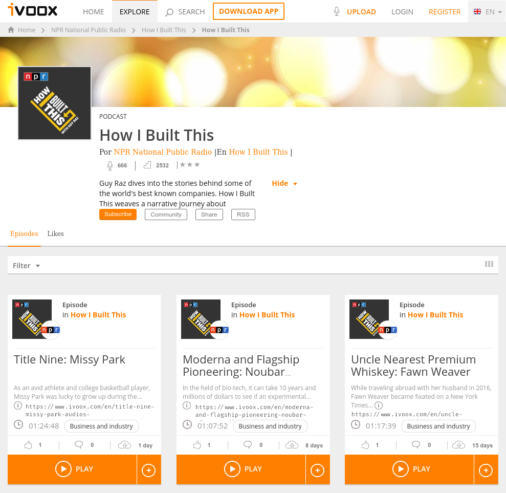

1. Markup languages. XML ↵
Introduction¶
Objectives¶
By the end of the unit, students will be able to:
- Know the markup languages.
- Identify their advantages and main uses.
- Recognise their common characteristics.
- Know how markup languages are classified.
- Create well formatted XML documents.
- Recognise the need to use namespaces.
Contents¶
- Concept of markup language.
- Advantatges.
- Common characteristics.
- Identification of areas of application.
- Classification.
- XML: structure and syntax.
- Tags.
- Editing tools.
- Creation of well-formed documents.
- Use of XML namespaces.
1. Markup language¶
Concept of markup language¶
Markup languages are ways of annotating an electronic document. Usually markup will either specify how something should be displayed or what something means. The origin of the term is in typesetting, where proofs were marked up with instructions about their visual appearance, but the term then broadened to include the semantic perspective that we’re interested in here.
The names of the most popular languages usually end with Markup Language and so are abbreviated as something-ML: for example,
- HTML – Hypertext Markup Language
- KML – Keyhole Markup Language
- MathML – Mathematical Markup Language
- SGML – Standard Generalized Markup Language
- XHTML – eXtensible Hypertext Markup Language
- XML – eXtensible Markup Language
The most widely used markup language is HTML (HyperText Markup Language), the foundation of the World Wide Web.
Some examples are:
HTML 4.0
<h1>Anatidae</h1>
<p>
The family <i>Anatidae</i> includes ducks, geese, and swans,
but <em>not</em> the closely related screamers.
</p>
XML
<?xml version="1.0" encoding="UTF-8"?>
<note>
<to>Tove</to>
<from>Jani</from>
<heading>Reminder</heading>
<body>Don't forget me this weekend!</body>
</note>
Advantages¶
Initially, markup languages focused on document generation but thanks to its advantages its use has been extended to definition of data structures and sharing of information.
The main advantages are:
- Ease of creation and reading.
- Compliance with defined and public storage standards.
- Incorporation of metadata.
- Definition of the structure of the data.
Common features¶
Markup languages have stood out for a number of features which lead them to become the most widely used types of languages in modern computing for storing and representing data. Among the most interesting features that markup languages offer are:
- They intermix the text of a document with markup instructions in the same data stream or file.
- They are based on plain text.
- They allow the use of metadata.
- They are easy to interpret and process.
- They are easy to create and flexible enough to represent very diverse data.
Internet applications and many of the computer programs use them in one way or another.
Fields of applicacion¶
While the idea of markup language originated with text documents, there is an increasing use of markup languages in the presentation of other types of information, including playlists, vector graphics, web services, content syndication, and user interfaces. Most of these are XML applications, because XML is a well-defined and extensible language.
Regarding the fields of application we can define the following classification:
- Documents in general:
- Descriptive languages such as XML, HTML 5, YAML.
- Presentation languages such as RTF, Tex, HTML 4.
- Lightweight languages like Markdown
- Internet technologies:
- HTML, XHTML, GladeXML, Atom, RSS, WSDL
- Specialized languages:
- SVG, XMPP, COLLADA
In Markup language you will find more information.
Types of markup language¶
There are three main general categoris of electronic markup:
- Presentation languages, aimed at specifying how the information must be represented. This kind of markup is used by traditional word-processing systems.
- Procedural markup. Markup is embedded in text which provides instructions for programs to process the text. Well-known examples include troff, TeX, and PostScript.
- Descriptive or semantic languages: aimed at describing the structure of the data it contains.
This is the most accepted classification, but as is often the case in the field of Computer Science, we can find languages that have aspects of these categories and allow them to define the way the information is presented and to define it the structure.
In the recent years, a number of small and largely unstandardized markup languages have been developed to allow authors to create formatted text via web browsers, such as the ones used in wikis and in web forums. These are sometimes called lightweight markup languages. Markdown, BBCode, and the markup language used by Wikipedia are examples of such languages.
Procedural and presentation¶
In these languages, what is done is to indicate how to do it the presentation of the data. Either through design information (mark bold, titles, etc.) or procedures to be performed by the software representation. The most popular example of these languages is HTML, but there are some there are many more: TeX, Wikitext ...
In these cases the documents can help us to determine in what way the document will be shown to whoever reads it.
Latex: a procedural markup language¶
For example:
\documentclass{article}
\usepackage{graphicx}
\begin{document}
\title{Introduction to LaTeX {}}
\author{Author's Name}
\maketitle
\begin{abstract}
The abstract text goes here.
\end{abstract}
\section{Introduction}
Here is the text of your introduction.
\begin{equation}
\label{simple_equation}
\alpha=\sqrt{\beta}
\end{equation}
\subsection{Subsection Heading Here}
Write your subsection text here.
\begin{figure}
\centering
\includegraphics[width = 3.0in]{myfigure}
\caption{Simulation Results}
\label{simulationfigure}
\end{figure}
\section{Conclusion}
Write your conclusion here.
\end{document}
Descriptive or semantic¶
These languages describe the logical structure of the document ignoring how it will be represented in the programs. Only the marks are put with the aim of defining the parts that give structure to the document. The example more important is XML but there are others that are having a lot of support, such as for example JSON.
In the following document we have an example of a file of marks that represents information about people:
<students>
<person>
<name>Pere</name>
<lastname>Puig</lastname>
</person>
<person>
<name>Manel</name>
<lastname>Garcia</lastname>
</person>
</students>
students tag.
This document shows the structure of the data it contains and also this can also be discovered by interpreting the labels their content semantic. From the knowledge we have it follows that Peter is the name of a person who is a student.
Task 1. Activities
- Compare the export options when saving a document in LibreOffice Writer.
-
Type the following text in a plain text file,
myfile.txt:Open this file with your browser. How does it look? Change the file extension to html. Does it show the same information? Why?<h1> level 1 header </h1> <h3> level 3 header </h3> -
Search the Internet for a classification of markup languages. Write down 3 examples of each type specifying their main use.
-
Go to openclipart.org, search for "8 ball", download the simplest image you see. Open it with the text editor.
Can you undestand the structure? Try to change the color of the ball (hint: the colors are formatted: #000000).
Bibliography, webgraphy and credits¶
- https://port.sas.ac.uk/course/view.php?id=54§ion=1
- https://en.wikipedia.org/wiki/Markup_language
- https://www.youtube.com/watch?v=nQZEP8hENMs
2. XML¶
Introduction¶
Extensible Markup Language (XML) is a markup language that defines a set of rules for encoding documents in a format that is both human-readable and machine-readable. The World Wide Web Consortium's XML 1.0 Specification of 1998 and several other related specifications—all of them free open standards—define XML.
The design goals of XML emphasize simplicity, generality, and usability across the Internet.It is a textual data format with strong support via Unicode for different human languages. Although the design of XML focuses on documents, the language is widely used for the representation of arbitrary data structures such as those used in web services.
World Web Consortium
The World Wide Web Consortium (W3C) is the main international standards organization for the World Wide Web. Founded in 1994 and currently led by Tim Berners-Lee, the consortium is made up of member organizations that maintain full-time staff working together in the development of standards for the World Wide Web. As of 21 October 2019, W3C had 443 members. W3C also engages in education and outreach, develops software and serves as an open forum for discussion about the Web.
XML is a markup language similar to HTML, but without predefined tags to use. Instead, you define your own tags (extensible) designed specifically for your needs. This is a powerful way to store data in a format that can be stored, searched, and shared. Most importantly, since the fundamental format of XML is standardized, if you share or transmit XML across systems or platforms, either locally or over the internet, the recipient can still parse the data due to the standardized XML syntax.
These are some languages based on XML:
- GML (Geography Markup Language).
- MathML (Mathematical Markup Language).
- RSS (Really Simple Syndication).
- SVG (Scalable Vector Graphics).
- XHTML (eXtensible HyperText Markup Language).
Key terminology¶
The material in this section is based on the XML Specification. This is not an exhaustive list of all the constructs that appear in XML; it provides an introduction to the key constructs most often encountered in day-to-day use.
Character¶
An XML document is a string of characters. Almost every legal Unicode character may appear in an XML document.
Processor and application¶
The processor analyzes the markup and passes structured information to an application. The specification places requirements on what an XML processor must do and not do, but the application is outside its scope. The processor (as the specification calls it) is often referred to colloquially as an XML parser.
Markup and content¶
The characters making up an XML document are divided into markup and content, which may be distinguished by the application of simple syntactic rules. Generally, strings that constitute markup either begin with the character < and end with a >, or they begin with the character & and end with a ;. Strings of characters that are not markup are content. However, in a CDATA section, the delimiters <![CDATA[ and ]]> are classified as markup, while the text between them is classified as content. In addition, whitespace before and after the outermost element is classified as markup.
Tag¶
A tag is a markup construct that begins with < and ends with >. Tags come in three flavors:
- start-tag, such as
<section>; - end-tag, such as
</section>; - empty-element tag, such as
<line-break />.
Element¶
An element is a logical document component that either begins with a start-tag and ends with a matching end-tag or consists only of an empty-element tag. The characters between the start-tag and end-tag, if any, are the element's content, and may contain markup, including other elements, which are called child elements. An example is <greeting>Hello, world!</greeting>. Another is <line-break />.
Attribute¶
An attribute is a markup construct consisting of a name–value pair that exists within a start-tag or empty-element tag. An example is <img src="madonna.jpg" alt="Madonna" />, where the names of the attributes are "src" and "alt", and their values are "madonna.jpg" and "Madonna" respectively. Another example is <step number="3">Connect A to B.</step>, where the name of the attribute is "number" and its value is "3". An XML attribute can only have a single value and each attribute can appear at most once on each element. In the common situation where a list of multiple values is desired, this must be done by encoding the list into a well-formed XML attribute with some format beyond what XML defines itself. Usually this is either a comma or semi-colon delimited list or, if the individual values are known not to contain spaces, a space-delimited list can be used. <div class="inner greeting-box">Welcome!</div>, where the attribute "class" has both the value "inner greeting-box" and also indicates the two CSS class names "inner" and "greeting-box".
XML declaration¶
XML documents may begin with an XML declaration that describes some information about themselves. An example is <?xml version="1.0" encoding="UTF-8"?>.
Entities¶
Like HTML, XML offers methods (called entities) for referring to some special reserved characters (such as a greater than sign which is used for tags). There are five of these characters that you should know:
| Character | Description | Entity |
|---|---|---|
| < | lt (less than) | < |
| > | gt (greater than) | > |
| " | quot (quotation mark) | " |
| ' | apos (apostrophe) | ' |
| & (ampersand) | amp (ampersand) | & |
Given the "entities.xml" file:
<? xml version = "1.0" encoding = "UTF-8"?>
<entities>
<less_than> < </less_than>
<greater_than> > </greater_than>
<double_quote> " </double_quote>
<simple_quote> ' </simple_quote>
<ampersand> & </ampersand>
</entities>
When you open it in Google Chrome you can see:

In the web browser, you can see where the references to entities have been written in the XML document (for example), the corresponding characters are displayed (for example <).
Structure and syntax¶
XML documents are composed by plain text and tags defined by developers.
Elements are represented by tags. If we want to save people's name we should write:
<name>Elsa</name>
<tag>text</tag>
<stag>) and the end tag (</tag>) we have written the data (text) we would storage. Elsa in the example.
Empty tags¶
In a XML document an element could not contain any value. If so, we should write:
<tag></tag>
<tag />
To write an empty element name, we should write:
<name></name>
<name />
Relation between parent and childs¶
An parent element could contain one or many elements:
<people>
<name>Elsa</name>
<woman />
<birthday>
<day>18</day>
<month>6</month>
<year>1996</year>
</birthday>
<city>Pamplona</city>
</people>
In this example, the people element contains four elements (children): "name", "woman", "birthday" and "city". In addition, the "birthday" element contains three elements (children): "day", "month" and "year".
Notice that of all the elements in this example, only the "woman" element is empty.
Root element¶
Each XML document has exactly one single root element. It encloses all the other elements and is therefore the sole parent element to all the other elements. ROOT elements are also called document elements. In HTML, the root element is the <html> element. In our example, the people element is the document root.
Graphically, we could represent it:
In this way, the structure of any XML document can be represented as an inverted tree of elements. It is said that the elements are the ones that give semantic structure to the document.
Elements with mixed content¶
An element type has mixed content when elements of that type may contain character data, optionally interspersed with child elements. In this case, the types of the child elements may be constrained, but not their order or their number of occurrences:
<description>
character data <br/> more text <br/>
and <strong>more data</strong>
</description>
XML Syntax Rules¶
You must follow these rules when you create XML syntax:
- All XML elements must have a closing tag.
- XML tags are case sensitive.
- All XML elements must be properly nested.
- All XML documents must have a root element.
- Attribute values must always be quoted.
All XML elements must have a closing tag¶
It is illegal to omit the closing tag when you are creating XML syntax. XML elements must have a closing tag.
Incorrect:
<body>See Spot run.
<body>See Spot catch the ball.
Correct:
<body>See Spot run.</body>
<body>See Spot catch the ball.</body>
All XML elements must be properly nested¶
Improper nesting of tags makes no sense to XML.
Incorrect:
<b><i>This text is bold and italic.</b></i>
Correct:
<b><i>This text is bold and italic.</i></b>
All XML documents must have a root element¶
All XML documents must contain a single tag pair to define a root element. All other elements must be within this root element. All elements can have sub elements (child elements). Sub elements must be correctly nested within their parent element.
Example:
<root>
<child>
<subchild>.....</subchild>
</child>
</root>
Attribute values must always be quoted¶
It is illegal to omit quotation marks around attribute values. XML elements can have attributes in name/value pairs; however, the attribute value must always be quoted.
Incorrect:
<?xml version= “1.0” encoding=“ISO-8859-1”?>
<note date=05/05/05>
<to>Dick</to>
<from>Jane</from>
</note>
<?xml version= “1.0” encoding=“ISO-8859-1”?>
<note date=”05/05/05”>
<to>Dick</to>
<from>Jane</from>
</note>
In the incorrect document, the date attribute in the note element is not quoted.
XML tags are case sensitive¶
When you create XML documents, the tag
is different from the tag .Incorrect:
<Body>See Spot run.</body>
Correct:
<body>See Spot run.</body>
In addition, they have to fullfil the follow rules:
- They can contain lowercase letters, uppercase letters, numbers, periods ".", hyphens "-" and underscores "_".
- They can also contain the colon ":". However, its use is reserved for when define namespaces.
- The first character must be a letter or a hyphen under "_".
The following elements are breaking some rules:
<ciudad>Pamplona</ciudad>
<día>18</dia>
<mes>6<mes/>
<ciudad>Pamplona</finciudad>
<_rojo>
<2colores>Rojo y Naranja</2colores>
<persona><nombre>Elsa</persona></nombre>
<color favorito>azul</color favorito>
We must write them:
<ciudad>Pamplona</ciudad>
<día>18</día>
<mes>6</mes>
<ciudad>Pamplona</ciudad>
<_rojo/>
<colores2>Rojo y Naranja</colores2>
<Aficiones >Cine, Bailar, Nadar</Aficiones >
<persona><nombre>Elsa</nombre></persona>
<color.favorito>azul</color.favorito>
<color-favorito>azul</color-favorito>
<color_favorito>azul</color_favorito>
As for the hyphen - and period .characters, although they are also allowed to name tags,
it is also advisable to avoid its use.
Attributes in XML¶
Elements of an XML document can have attributes defined in the start tag. An attribute serves to provide extra information about the item that contains it.
Given the following data for a product:
- Code: G45
- Name: Wool hat
- Color: black
- Price: 12.56
Its representation in an XML document could be, for example:
<product code = "G45">
<name color = "black" price = "12.56"> Wool hat </ name>
</ product>
If, for example, the code attribute were to be represented as an element, it could be written:
<product>
<code> G45 </code>
<name color = "black" price = "12.56"> Wool hat </ name>
</ product>
Elements and attributes¶
An element is a logical component of an XML document. The elements usually have their own entity. The content of an item is everything between the opening and closing tags, even if they contain other elements (children).
In contrast, attributes usually represent properties or characteristics of elements.
Syntax rules¶
Attribute names must meet the same syntax rules as element names. In addition, all attributes of an element must be unique. For example, it is incorrect to write:
<data x="3" x="4" i="5" />
However, it is correct to write:
<data x="3" X="4" i="5" />
XML declaration¶
The XML declaration that can be written at the beginning of an XML document begins with the characters "<?" and ends with "?>".
Version and coding¶
An XML document could contain the following XML declaration:
<? xml version = "1.0" encoding = "UTF-8"?>
An XML declaration is not required to appear in an XML document. However, if it includes it, it must appear in the first line of the document, and the "<" character must be the first of that line, that is, blank spaces cannot appear before.
standalone attribute¶
In an XML declaration, in addition to the version and encoding of the attributes, the standalone attribute can also be written,
which can take two values ("yes" or "no"):
<?xml version = "1.0" encoding = "UTF-8" standalone = "yes"?>
standalone =" yes " indicates that the document is independent of others, such as one
DTD (Document Type Definition, external Definition (or we will see later). Otherwise,
would mean that the document is not independent.
In an XML document, writing the XML declaration is optional. But, if written, the version attribute is required.
However, the encoding andstandalone attributes are optional, and by default their values are "UTF-8" and "no".
respectively.
On the other hand, when typing the encoding attribute, it should always appear after the version. And, the attribute
standalone, as long as it exists, must be in the last place.
Problematic characters in XML: less than (<) and ampersand (&)¶
In an XML document, the "<" character is problematic because it indicates the beginning of a tag. So, instead of writing, for example:
<condition>a < b</condition>
<condition>a < b </condition>
> character can be used in the text contained in an element, and it is not incorrect to write, for example:
<condition>a > b</condition>
>).
In an XML document, the ampersand character is also problematic, as it is used to indicate the beginning of an reference to entity. For example, it is incorrect to write:
<condition> a==1 && b==2 </condition>
<condition> a==1 && b==2 </condition>
Character references in XML¶
Unicode character references with &# symbols can be written in an XML document, followed by the decimal value or hexadecimal of the Unicode character you want to represent and finally adding the semicolon character ";".
Representation of the Euro character (€) in XML
Given the XML document "products.xml":
<? xml version = "1.0" encoding = "UTF-8"?>
<products>
<name price = "12.56€"> Wool hat </name>
<name price = "16.99€"> Fleece cap </name>
</products>
When viewing in a web browser, you can see the following:

It should be noted that, in this case, to represent the symbol of the Euro (€), its value has been used for the first time.
decimal (€) in Unicode and, the second time, its hexadecimal value (€).
Comments in XML¶
To write comments to an XML document, they must be written between the characters <!-- and -->. For example:
<!-- This is a comment written in an XML document -->
Given the XML file "letras.xml":
<?xml version = "1.0" encoding = "UTF-8"?>
<!-- Example use of comments .-->
<a>
<b>
<c quantity="4">cccc</c>
<d quantity="2">dd</d>
</b>
<e>
<f quantity="8">ffffffff</f>
<!-- g may appear several times -->
<g quantity="5">ggggg </g>
<g quantity="2">gg </g>
</e>
</a>

In an XML document, comments cannot be written within tags. For example, it is incorrect to write:
<element <!-- empty element --> />
<!-- two hyphens in a row - in a comment gives error -->
CDATA sections in XML¶
An XML document can contain CDATA (Character DATA) sections for writing text that is not intended to be parsed.
For example, this can be useful when you want to type text that contains any of the problematic characters: less than <
o ampersand &.
In an XML document, to include a CDATA section, we must start with the character string
<![CDATA [
]]>.
A CDATA section may contain, for example, the source code of a program written in the C language:
<? xml version = "1.0" encoding = "UTF-8"?>
<CDATA_example>
<![CDATA [
#include <stdio.h>
int main ()
{
float note;
printf ("\n Enter note (real):");
scanf ("%f", ¬e);
if (5 <= note)
printf ("\n APPROVED");
return 0;
}
]]>
</CDATA_example>

The string "]]>" cannot be written within a CDATA section. Consequently, CDATA sections cannot be nested.
On the other hand, it is not allowed to write whitespace or line breaks in start strings "<![CDATA [" or end "]]>" of a CDATA section
Editing tools¶
To edit XML documents it is enough to have a plain text editor, such as Notepad or Pluma, but we can also use some specific editors like XML Copy Editor or an IDE with some plugin like Visual Studio Code with XML Tools and XML by Red Hat.
Preparation of well-formed XML documents¶
An XML document is said to be well-formed when it has no syntax errors. This includes the following aspects:
- Element names and their attributes must be spelled correctly.
- Attribute values must be enclosed in double or single quotes.
- The attributes of an element must be separated by whitespace.
- References to entities should be used where necessary.
- There must be a single root element.
- Every element must have a parent element except the root element.
- All items must have an opening label and a closing label.
- Labels must be nested correctly.
- The XML declaration must be in the first line written correctly.
- The
CDATAsections and comments must be spelled correctly.
Using namespaces in XML¶
XML namespaces are a mechanism for ensuring that the elements and attributes of an XML document have names unique. They are defined in a W3C recommendation. The problem they solve is the ambiguity that arises when a document XML contains names of elements or attributes from various vocabularies and results in various elements or attributes homonyms (with the same name): if each vocabulary is given a different namespace, the ambiguity is resolved.
For example:
<menu>
<option>Save</option>
<description>Save the current document</description>
</menu>
<menu>
<meats>
<veal_steak price = "12.95" />
<sirloin_staeck price = "13.60" />
</meats>
<fishes>
<baked_salmon price = "16.20" />
<hake_in_green_sauce price = "15.85" />
</fishes>
</menu>
So, if the <menu> elements are included in an XML document, a name conflict arises. To solve it,
namespaces can be used. For example, typing:
<?xml version = "1.0" encoding = "UTF-8"?>
<e1:example xmlns:e1="http://www.abrirllave.com/example1"
xmlns:e2="http://www.abrirllave.com/ejemplo2">
<e1:menu>
<e1:option>Save</e1:option>
<e1:description>Save the current document</e1:description>
</e1:menu>
<e2:menu>
<e2:meats>
<e2:veal_steak price = "12.95" />
<e2:sirloin_staeck price = "13.60" />
</e2:meats>
<e2:fishes>
<e2:baked_salmon price = "16.20" />
<e2:hake_in_green_sauce price = "15.85" />
</e2:fishes>
</e2:menu>
</e1:example>
The following syntax is used to define a namespace:
xmlns: prefix = "URI"
In the example, notice that, xmlns is an attribute that was used in the start tag of the element<example>and,
in this case, two namespaces have been defined that refer to the following URIs (Uniform Resource Identifier,
Uniform Resource Identifier):
- http://www.abrirllave.com/example1
- http://www.abrirllave.com/example2
The defined prefixes are e1 and e2, respectively. Prefixes have been added to the tags that appear in the
document: <e1: menu>, <e2: menu>, <e1: option>, etc.
Defining a default namespace¶
Alternatively, a default namespace can be defined using the following syntax:
xmlns="URI"
In this way, both the element where the namespace has been defined, and all its successors (children, children of children, etc.), must belong to this namespace. For example:
<?xml version = "1.0" encoding = "UTF-8"?>
<example xmlns="http://www.abrirllave.com/example1">
<menu>
<option>Save</option>
<description>Save the current document</description>
</menu>
<example> element and its contents.
in it. However, a second namespace is then defined, which by default affects the second <menu> element
that appears in the document and its successors:,,<?xml version = "1.0" encoding = "UTF-8"?>
<example xmlns="http://www.abrirllave.com/example1">
<menu>
<option>Save</option>
<description>Save the current document</description>
</menu>
<menu xmlns="http://www.abrirllave.com/example2">
<meats>
<veal_steak price = "12.95" />
<sirloin_staeck price = "13.60" />
</meats>
<fishes>
<baked_salmon price = "16.20" />
<hake_in_green_sauce price = "15.85" />
</fishes>
</menu>
</example>
In an XML document, to indicate that certain elements -or all- do not belong to any namespace, the attribute is written
xmlns empty, that is,xmlns="".
<?xml version = "1.0" encoding = "UTF-8"?>
<example xmlns="http://www.abrirllave.com/example1">
<menu>
<option>Save</option>
<description>Save the current document</description>
</menu>
<menu xmlns="http://www.abrirllave.com/example2">
<meats>
<veal_steak price = "12.95" />
<sirloin_staeck price = "13.60" />
</meats>
<fishes xmlns="">
<baked_salmon price = "16.20" />
<hake_in_green_sauce price = "15.85" />
</fishes>
</menu>
</example>
Activities¶
Task 121. XML syntax errors
Review the following XML document, detect errors, and rewrite it correctly
<?xml version="1.0" encoding="UTF-8"?>
<frutas>
</frutas>
< frutas >
< fruta >
< nombre >cereza< nombre \>
< fruta \>
< fruta >
< nombre >naranja< nombre \>
< fruta \>
< frutas \>
Task 122. Creating XML documents
Write an XML document that stores the following information:
Cities
| Name | Country | Continent |
|---|---|---|
| New Delhi | India | Asia |
| Lisbon | Portugal | Europe |
| Cairo | Egypt | Africa |
Note: The continent must be represented by an attribute.
Historical facts

Note: only the description of each fact must be represented by an attribute.
Task 123: The DAW modules
Create an XML document in order to store the modules of the DAW training cycle indicating how many hours last each module and the year in which is taught.
Task 124: Well-formed XML documents
Resolve the tasks in the follow document: Activity statement.
Task 125: Sitemaps
Create an XML sitemap
Given the following file and folder structure of a website (examples-of-xml.com):
/index.html/contact.html/imagess/printer.gif/images/monitor.gif/images/keyboard.gif/products/printer.html/products/monitor.html/products/keyboard.html
Using the information provided in:
- Standard Sitemap Protocol - sitemaps.org
- Create and submit a sitemap - Images sitemap at Google Developers
Create an XML sitemap ("sitemap.xml") of the website, excluding images.
You can validate it at https://www.mysitemapgenerator.com/service/check.html
Extension
Create another XML document ("sitemap2.xml") including the images and indicating a different title for each one of them.
Note: it is necessary to take into account that each image (printer.gif, monitor.gif and keyboard.gif) is included only in the web page of the site that has the same name (printer.html, monitor.html and keyboard.html).
Task 126. List of web page bookmarks
Without using attributes, create a well-formed XML document that describes a list of web page bookmarks, knowing that you want the information for each page to be the name, a short description, and its URL. The data of the markers is as described in the following table:
| Name | Description | URL |
|---|---|---|
| Abrir llave | Computing tutorials. | http://www.abrirllave.com/ |
| Wikipedia | The free encyclopedia. | http://www.wikipedia.org/ |
| W3C | World Wide Web Consortium. | http://www.w3.org/ |
Task 127. Form a sentence to a XML document
Create an XML document so that the markup makes it possible to search for information according to the following fields: recipient of the order, item ordered, delivery address, delivery date.
Order for Mr. Juan Delgado Martínez. The order consists of an A2023 bicycle. To be delivered at Calle Barco 4, third floor, letter A, on 05-19-2021.
Bibliography, webography and credits¶
- Wikipedia contributors. (2020, September 13). Markup language. In Wikipedia, The Free Encyclopedia. Retrieved 15:51, September 15, 2020, from https://en.wikipedia.org/w/index.php?title=Markup_language&oldid=978142210
- Carlos Pes. (Febrer de 2017). Lenguajes de Marcas y Sistemas de Gestión de Información (LMSGI) disponible en Tutorial de LMSGI
- Bartolomé Sintés Marco. (Juny de 2020). XML: Lenguaje de marcas extensible, disponible en https://www.mclibre.org/consultar/xml/
- Mozilla Contributors (June 2021). XML introduction. Available at https://developer.mozilla.org/en-US/docs/Web/XML/XML_introduction
- IBM Corporation. (June 2020). XML Syntax Rules. Available at https://www.ibm.com/docs/en/scbn?topic=syntax-xml-rules
Ended: 1. Markup languages. XML
2. XML schemas and vocabularies¶
Objectives
- Understand the need to describe the information transmitted in XML documents and their rules.
- Identify technologies related to the definition of XML documents.
- Analyse the structure and specific syntax used in the description.
- Create descriptions of XML documents.
- Use descriptions in the preparation and validation of XML documents.
- Associate descriptions with documents.
- Document descriptions.
Assessment criteria
- The need to describe the information transmitted in XML documents has been established and its rules.
- Technologies related to the definition of XML documents have been identified.
- The specific structure and syntax used in the description has been analyzed.
- XML document descriptions have been created.
- Descriptions have been used in the development and validation of XML documents.
- Descriptions have been associated with the documents.
- Specific tools are used.
- The descriptions have been documented.
Introduction¶
In unit 1 you have learned how to create well-formed XML documents, that is, following their syntactic rules.
Important
An XML document is valid when, in addition to being well-formed, it does not break none of the rules established in its structure definition.
The aim of this unit is to learn how structural rules can be defined to be able to create our own XML dialects and how these rules can define valid XML documents.
This kind of structure can be defined with the following languages:
- DTD (Document Type Definition).
- XML Schema.
- RELAX NG (REgular LAnguage for XML Next Generation).
Look at this simple XML document called "note.xml":
<?xml version="1.0"?>
<note>
<to>Tove</to>
<from>Jani</from>
<heading>Reminder</heading>
<body>Don't forget me this weekend!</body>
</note>
A DTD File¶
The following example is a DTD file called note.dtd that defines the elements of the XML document above (note.xml):
<!ELEMENT note (to, from, heading, body)>
<!ELEMENT to (#PCDATA)>
<!ELEMENT from (#PCDATA)>
<!ELEMENT heading (#PCDATA)>
<!ELEMENT body (#PCDATA)>
note element to have four child elements: "to, from, heading, body".
Line 2-5 defines the to, from, heading, body elements to be of type #PCDATA.
An XML Schema¶
The following example is an XML Schema file called note.xsd that defines the elements of the XML document above (note.xml):
<?xml version="1.0"?>
<xs:schema>
<xs:element name="note">
<xs:complexType>
<xs:sequence>
<xs:element name="to" type="xs:string"/>
<xs:element name="from" type="xs:string"/>
<xs:element name="heading" type="xs:string"/>
<xs:element name="body" type="xs:string"/>
</xs:sequence>
</xs:complexType>
</xs:element>
</xs:schema>
Document Type Definitions¶
DTD (document type definitions) is a schema definition language that already existed before the advent of XML (used in SGML). It was designed to work with SGML and could be used in many of the markup languages based on it, such as XML or HTML.
When XML was defined, it was used to make a simplified version of DTD that was the original schema specification language. An associated advantage was that using a version of DTD would allow SGML compatibility to be maintained, and therefore DTDs were referenced in the XML specification (http://www.w3.org/TR/REC-xml/).
The main purpose of DTDs is to provide a mechanism for validating the structures of XML documents and determining whether the document is valid or not. But this will not be the only advantage that DTDs will give us, but we can also use them to share information between organizations, because if someone else has our DTD they can send us information in our format and with the program we have fact we can process it.
For a long time DTDs were the most widely used vocabulary definition system in XML but have now been overtaken by XML Schemas. However it is still widely used, especially because it is much simpler.
The XML specification refers to DTDs as a method of defining XML vocabularies, but DTDs have a number of limitations that led the W3C to define a new specification. This specification was called the W3C XML Schema Definition Language (popularly called the XML Schema or XSD), and was created to replace the DTD as a vocabulary definition method for XML documents. Furthermore, unlike DTD, XSD is an XML dialect.
For these reasons, we will focus on XML Schema.
XML Schema Definition¶
The latest specification can be found at www.w3.org/XML/Schema.
The purpose of an XML Schema is to define the legal building blocks of an XML document:
- the elements and attributes that can appear in a document
- the number of (and order of) child elements
- data types for elements and attributes
- default and fixed values for elements and attributes
The success of XSD has been great, and it is now used for tasks other than simply validating XML. It is also used in other XML technologies such as XQuery, web services, etc.
The most important features that XSD provides are:
- It is written in XML and therefore it is not necessary to learn a new language to define XML schemas.
- It has its own data type system, so you can check the contents of the items.
- Supports namespaces to allow mixing different vocabularies.
<schema> definition¶
XSD is based on XML and must therefore comply with XML rules:
- Although not required, the file is usually started with the XML declaration.
- There is only one root element, which in this case is
<schema>.
Due to the fact that an specific and well-known vocabulary is being used to be able to use the XML elements, the XSD namespace must always be specified: http://www.w3.org/2001/XMLSchema.
<?xml version="1.0"?>
<xs:schema xmlns:xs="http://www.w3.org/2001/XMLSchema"
elementFormDefault="qualified">
...
</xs:schema>
xmlns:xs="http://www.w3.org/2001/XMLSchema" indicates that the elements and data types used in the schema come from the "http://www.w3.org/2001/XMLSchema" namespace. It also specifies that the elements and data types that come from the "http://www.w3.org/2001/XMLSchema" namespace should be prefixed with xs:.
elementFormDefault="qualified" indicates that any elements used by the XML instance document which were declared in this schema must be namespace qualified.
XSD tags
XSD defines many tags and not all of them can be seen here. You can find all possible tags in the specification www.w3.org/TR/xmlschema11-1.
The <schema> tag can have different attributes, some of which we can see in the following table
| Attribute | Meaning |
|---|---|
attributeFormDefault |
The value must be "qualified" or "unqualified". Default is "unqualified". "unqualified" indicates that attributes from the target namespace are not required to be qualified with the namespace prefix. |
elementFormDefault |
The form for elements declared in the target namespace of this schema. The value must be "qualified" or "unqualified". Default is "unqualified". "unqualified" indicates that elements from the target namespace are not required to be qualified with the namespace prefix. |
version |
Defines which version of the schema document we are defining (not the XML Schemas version). |
From the root element you can start defining the tags of the vocabulary you want to create.
Associate a schema to an XML document¶
Unlike other definition languages -such as DTDs, in which the association must be specified in the XML document- you do not need to modify the XML file to validate an XML with an XSD. However, it is also possible to do this by defining the namespace.
To associate an XML document with a schema document, you need to define the namespace with the xmlns attribute, and use one of the language attributes to define the schema file:
<urlset xmlns:xsi="http://www.w3.org/2001/XMLSchema-instance"
xsi:noNamespaceSchemaLocation="urlset.xsd">
| Attribute | Meaning |
|---|---|
noNamespaceSchemaLocation |
No namespaces will be used in the document. |
schemaLocation |
Used when explicitly using namespace names in tags. |
Elements definition¶
Elements are defined using the <element> tag and the name attribute. Optionally, it can include the data type of its containing element. In the following example we define an element named firstname of type string.
<xs:element name="firstname" type="xs:string" />
<firstname>Homer</firstname>
- Elements with simple type content: Elements without attributes that only contain data.
- Elements with complex type content: Elements that may have attributes, no content, or contain elements.
From the definition, it can be seen that there will almost always be some complex type, as the root will usually contain other elements.
Elements with simple type content¶
Info
Elements with simple type content are those that do not contain other elements or have attributes.
XSD version 1.1 defines about fifty different data types, which can be found in their definition www.w3.org/TR/xmlschema11-2. Among the most used are those in the following table:
| Type | Data that can be stored there |
|---|---|
string |
Character strings |
decimal |
Numeric values |
boolean |
Can only contain ‘true’ or ‘false’ or (1 or 0) |
date |
Dates in form (YYYY-MM-DD) |
anyURI |
Site references (URLs, disk paths…) |
base64binary |
Binary data encoded in base64 |
integer |
Integers |
From the basic types, the standard creates others with the aim of having data types that can be better adapted to the objectives of the person designing the scheme. Therefore there are the types called positiveInteger, nonNegativeInteger, gYearMonth, unsignedInt,...
Data types allow you to restrict the values that XML elements will contain. For example, if you start from the following definition:
...
<xs:element name="position" type="xs:integer" />
</xs:schema>
<position>First</position>
In the following table you can see examples of definitions of elements and values that validate them.
| Label | Example |
|---|---|
<xs:element name=“dia” type=“xs:date” /> |
<dia>2011-09-15</dia> |
<xs:element name=“height” type="xs:integer" /> |
<height>220</height> |
<xs:element name=“name” type=“xs:string” /> |
<name>Pere Puig</name> |
<xs:element name=“size” type=“xs:float” /> |
<size>1.7E2</size> |
<xs:element name=“place” type=“xs:anyURI” /> |
<place>http://www.ioc.cat</place> |
Cardinality¶
When an element is defined in XSD, it is in such a way that the tag must appear once. It is quite common for tags to be repeated certain times. In XSD this has been simplified by attributes of the <element> tag that determine the cardinality of the elements:
minOccurs: allows you to define how many times an element must come out at least. A value of ‘0’ indicates that the item may not come out.maxOccurs: used to define the maximum number of times an element can be output.unboundedimplies that there is no limit to the times it can go out.
Using the attributes, you can set the <firstname> element to go out once and the <surname> element a maximum of twice.
<xs:element name="firtname" />
<xs:element name="surname" maxOccurs="2" />
Fixed and default values¶
Values can also be given to elements with the fixed, default, and nullable attributes.
The fixed attribute allows you to define a required value for an element:
<xs:element name="centre" type="xs:string" fixed="IOC" />
<centre />
<centre>IOC</centre>
But never a different value than specified:
<!-- validation error -->
<centre> Institut Cendrassos </centre>
fixed, default assigns a default value but lets it be changed in the contents of the element.
<xsi:element name="centre" type="xs:string" default="IOC" />
The definition would validate with the following three cases:
<center />
<centre>IOC</centre>
<centre>Institut Cendrassos</centre>
The null attribute is used to indicate whether null content is allowed. Therefore, you can only take the values yes or no.
Simple custom types¶
Sometimes it may be interesting to define values for elements that do not necessarily have to match the standards. XSD allows you to define custom types of data. For example, if you want a numeric value but do not accept all values but a subset of integers.
To define custom simple types, the type is not placed in the element and a <simpleType> child is defined.
<xs:element name="person">
<xs:simpleType>
...
</xs:simpleType>
</xs:element>
simpleType specifies the modification you want to make. The most common is that the changes are made with list, union, restriction or extension.
Lists¶
Although lists of values can be defined, it is not highly recommended to use them. Most experts believe that it is better to define the values in the list using tag repetitions.
Using list will allow you to define that an item can contain lists of values. Therefore, to specify that a
<xs:element name="matches">
<xs:simpleType>
<xs:list itemType="xs:date" />
</xs:simpleType>
</xs:element>
The element would validate with something like:
<matches>2011-01-07 2011-01-15 2011-01-21 </matches>
simpleType elements can also be defined with a name outside the elements and then used as a custom data type.
<xs:simpleType name="days">
<xs:list itemType="xs:date" />
</xs:simpleType>
<xs:element name="matches" type="days" />
Union¶
Using custom named types, union type modifications can be created. Union modifiers are used to allow different types to be mixed into the contents of an element.
Defining the <price> element will allow the element to be of type value or symbol type.
<xs:element name="price">
<xs:simpleType>
<xs:union memberTypes="value symbol" />
</xs:simpleType>
</xs:element>
With this we could assign values like these:
<price>25 €</price>
Restrictions¶
Without a doubt the most interesting modifier is the one that allows to define restrictions to the base types. With the restriction modifier you can create data types in which only certain values are accepted, the data meets a certain condition, and so on.
The <birth> element can only have integer values between 1850 and 2011 if defined as follows:
<xs:simpleType name="year_birth">
<xs:restriction base="xs:integer">
<xs:maxInclusive value="2011" />
<xs:minInclusive value="1850" />
</xs:restriction>
</xs:simpleType>
<xs:element name="birth" type="year_birth" />
Restrictions of many types can be defined by means of attributes (Table.11). Normally the values of the constraints are specified in the value attribute:
| Result | Elements |
|---|---|
maxInclusive/maxExclusive |
Used to define the maximum numeric value that an item can take. |
minInclusive/minExclusive |
Set the minimum value for the value of an item. |
length |
With lenght we restrict the length that a text element can have. We can use <xs:minLength> and <xs:maxLenght> to be more accurate. |
enumeration |
Only allows the element to have one of the values specified in the different |
totalDigits |
Defines the number of digits of a numeric value. |
fractionDigits |
Used to specify the number of decimals that a numeric value can have. |
pattern |
Defines a regular expression to which the value of the element must fit in order to be valid. |
For example, the value of the <answer> element can only have one of the three values "A", "B" or "C" if it is defined in this way:
<xs:element name="answer">
<xs:simpleType>
<xs:enumeration value="A" />
<xs:enumeration value="B" />
<xs:enumeration value="C" />
</xs:simpleType>
</xs:element>
One of the most interesting constraints is those defined by the pattern attribute, which allows you to define constraints from regular expressions. As a general rule, we have that if a character is specified in the pattern it must appear in the content; the other possibilities can be seen in the table:
| Symbol | Equivalence |
|---|---|
. |
Any character |
\d |
Any digit |
\D |
Any non-digit character |
\s |
Non-printable characters: spaces, tabs, line breaks… |
\S |
Any printable character |
x* |
The previous character must appear 0 or more times |
x+ |
The previous character must appaer 1 or more times |
x? |
The previous character must appear or not |
[abc] |
There must be some character inside |
[0-9] |
There must be a value between the two specified, inclusive |
x{5} |
The x expression must appear 5 times. |
x{5,} |
The x expression must appear 5 or more times. |
x{5,8} |
The x expression must appear from 5 to 8 times. |
Using this system you can define highly customized data types. For example, we can define that a data must have the form of a DNI (8 digits, a hyphen and a capital letter) with this expression:
<xs:simpleType name="dni">
<xs:restriction base="xs:string">
<xs:pattern value="[0-9]{8}-[A-Z]" />
</xs:restriction>
</xs:simpleType>
More information
In Quick-Start: Regex Cheat Sheet you will find a quick guide to Regular Expressions and a lot of related resources.
Elements with complex type content¶
Info
Elements with complex type content are those that have attributes, contain other elements, or have no content.
Elements with complex content have received a lot of criticism because they are considered too complicated, but they should be used because in all schema files there will usually be a complex type: the root of the document.
There are considered to be four major groups of complex content:
- Those in its content have only data. Therefore, they are like those of simple types but with attributes.
- Items that contain only items in the content.
- The empty elements.
- Elements with mixed content.
Elements with complex type are defined by specifying that the data type of the element is <xs:complexType>.
<xs:element name="class">
<xs:complexType>
....
</xs:complexType>
</xs:element>
As with simple types, complex named types can be defined for reuse as custom types.
<xs:complexType name="course">
...
</xs:complexType>
<xs:element classType="course"/>
Attributes¶
A basic feature of XSD is that only complex type elements can have attributes. In essence, there is not much difference between defining an element or an attribute, as it is done in the same way but using the attribute tag.
The data types are the same and therefore can have basic types as in the following example:
<xs:attribute name= "number" type="xs:integer" />
<xs:attribute name="year">
<xs:simpleType>
<xs:restriction base="xs:integer">
<xs:maxInclusive value="2021" />
</xs:restriction>
</xs:simpleType>
</xs:attribute>
The <attribute> tag has a series of attributes that allow you to define extra features about the attributes.
| Attribute | Use |
|---|---|
| use | Specifies whether the attribute is required, optional, or prohibited. |
| default | Sets a default value. |
| fixed | Used to define required values for attributes. |
| form | Defines whether the attribute should go with the namespace alias (qualified) or not (unqualified). |
For example, the year attribute must be specified if it is defined as follows:
<xs:attribute name="year" type="xs:integer" use="required" />
Text-only elements with attributes¶
A complex text-only element can contain text and attributes. In this case, the content of complexType will be a simpleContent. simpleContent allows you to define restrictions or extensions to elements that only have data as content.
The most important difference is that in this case you can define attributes in the element. Attributes are added by defining an extension to the type used in the element.
xs:extension is used to extent a simpleType or a complexType element.
In this example, the <shoesize> element has integer content and defines one attributes, country, that are an string.
<xs:element name="shoesize">
<xs:complexType>
<xs:simpleContent>
<xs:extension base="xs:integer">
<xs:attribute name="country" type="xs:string" />
</xs:extension>
</xs:simpleContent>
</xs:complexType>
</xs:element>
<shoesize country="france">35</shoesize>
Content made up of elements¶
Elements that contain other elements can also be defined in XSD within a <complexType> and can be some of the elements in the following table:
| Label | Used for |
|---|---|
| sequence | Specify the content as an ordered list of items. |
| choice | Allows you to specify alternative items. |
| all | Define the content as a cluttered list of items. |
| complexContent | Extend or restrict complex content. |
Sequence¶
The <sequence> element is one of the ways that XSD language allows you to specify the elements that should be part of an element's content. Even in the case where there is only a single tag it can be defined as a sequence.
The most important condition they have is that the elements of the XML document to be validated must appear in the same order in which they are defined in the sequence.
<xs:element name="person">
<xs:complexType>
<xs:sequence>
<xs:element name="name" type="xs:string" />
<xs:element name="surname" type="xs:string" maxOccurs="2" />
<xs:element name="type" type="xs:string" />
</xs:sequence>
</xs:complexType>
</xs:element>
The example above defines that one or two surnames may appear before the appearance of <type>.
<person>
<name>Marcel</name>
<cognom>Puig</cognom>
<cognom>Lozano</cognom>
<type>Professor</type>
</person>
It will not validate any content if some item is not in exactly the same order.
<person>
<type>Professor</type>
<cognom>Puig</cognom>
<name>Marcel</name>
</person>
Sequences may contain other sequences of elements.
<xs:schema xmlns:xs="http://www.w3.org/2001/XMLSchema" elementFormDefault="qualified">
<xs:element name="person">
<xs:complexType>
<xs:sequence>
<xs:element name="fullname">
<xs:complexType>
<xs:sequence>
<xs:element name="name" type="xs:string" />
<xs:element name="surname" type="xs:string" maxOccurs="2" />
</xs:sequence>
</xs:complexType>
</xs:element>
<xs:element name="profession" type="xs:string" />
</xs:sequence>
</xs:complexType>
</xs:element>
</xs:schema>
Choice¶
The <choice> element is used to choose one of the alternatives presented.
In this example, the person element may contain either the <xs:complexType name="person">
<xs:choice>
<xs:element name="nomCognoms" type="xs:string" />
<xs:element name="dni" type="xs:string" />
</xs:choice>
...
Alternatives may include sequences or other <choice> elements. The following definition is a more elaborate example than the previous one and allows you to choose between the elements <name> and <surname> or <dni>.
<xs:choice>
<xs:sequence>
<xs:element name="name" type="xs:string" />
<xs:element name="surname" type="xs:string" maxOccurs="2" />
</xs:sequence>
<xs:element name="dni" type="xs:string" />
</xs:choice>
All¶
The most important difference between the <all> and <sequence> element is the order. The <all> element allows you to specify a sequence of elements but allows them to be specified in any order.
Therefore, if we define the
<xs:element name="person">
<xs:complexType>
<xs:all>
<xs:element name="nom" />
<xs:element name="surname" />
</xs:all>
</xs:complexType>
</xs:element>
It will help us to validate both this document:
<person>
<name>Pere</name>
<cognom>Garcia</nom>
</person>
like this:
<person>
<cognom>Garcia</nom>
<name>Pere</name>
</person>
```
But the limitations of this element that were not present in the ordered sequences must always be taken into account:
* There can only be elements within it. There can be no sequences or alternatives.
* Cardinality cannot be used in the elements it contains, as it would cause a problem of non-determinism.
Therefore, the following example is incorrect, as it is requested so that `<surname>` is able to appear twice.
```xml
<xs:all>
<xs:element name="name" type="xs:string" />
<xs:element name="surname" maxOccurs="2" type="xs:string" />
</xs:all>
One possible way to allow the first and last names to be specified in any order would be to do the following:
<xs:complexType>
<xs:choice>
<xs:sequence>
<xs:element name="name" type="xs:string" />
<xs:element name="surname" type="xs:string" maxOccurs="2" />
</xs:sequence>
<xs:sequence>
<xs:element name="surname" type="xs:string" maxOccurs="2" />
<xs:element name="name" type="xs:string" />
</xs:sequence>
</xs:choice>
</xs:complexType>
complexContent¶
The complexContent tag allows you to define extensions or restrictions to a complex
type that contains mixed content or just elements.
This makes it possible to extend an existing complex content with an extension or to restrict its contents.
For example, if you have already defined a full name data type in which the <name> and <surname> elements exist, you can reuse the definition to define a new data type, address book, in which the e-mail.
<xs:complexType name="fullname">
<xs:sequence>
<xs:element name="name" type="xs:string" />
<xs:element name="surname" type="xs:string" maxOccurs="2" />
</xs:sequence>
</xs:complexType>
<xs:complexType name="agenda">
<xs:complexContent>
<xs:extension base="fullname">
<xs:sequence>
<xs:element name="email" type="xs:string" />
</xs:sequence>
</xs:extension>
</xs:complexContent>
</xs:complexType>
In this way, an agenda element can be defined:
<xs:element name="persona" type="agenda" />
which must have the three elements <name>, <surname>, and <email>:
<person>
<name>Pere</name>
<cognom>Garcia</cognom>
<email>pgarcia@ioc.cat</email>
</person>
Empty elements¶
For XSD elements without content are always of complex type. The definition simply does not specify any content and we will have an empty element.
<xs:element name="delegate">
<xs:complexType />
</xs:element>
The definition allows you to define the item as follows:
<delegate />
If the element needs attributes they are simply specified within the complexType.
<xs:element name="delegate">
<xs:complexType>
<xs:attribute name="year" use="required" type="xs:gYear" />
</xs:complexType>
</xs:element>
And you can now define the attribute in the empty element:
<delegate year="2012" />
Mixed content¶
Mixed content elements are elements that have both elements and text. It was designed to include elements in the middle of a narrative text.
In XSD the mixed content is defined by putting the mixed="true" attribute in the definition of the
<xs:element name="letter">
<xs:complexType mixed="true">
<xs:sequence>
<xs:element name="name" type="xs:string" />
<xs:element name="dia" type="xs:gDay" />
</xs:sequence>
</xs:complexType>
</xs:element>
<card>Dear Sir <name>Peter</name>:
I am sending you this letter to remind you that we have stayed for
meet us on <day>12</day>
</card>
Example of creating an XSD¶
XSD vocabulary definitions can be created from the idea of what we want the data to contain or from a sample XML file.
Practical case¶
We want to store in an XML document some website bookmarks:
<?xml version="1.0" encoding="UTF-8"?>
<bookmarks>
<website>
<name>Abrirllave</name>
<description>Tutoriales de informática.</description>
<url>http://www.abrirllave.com/</url>
</website>
<website>
<name>Wikipedia</name>
<description>La enciclopedia libre.</description>
<url>http://www.wikipedia.org/</url>
</website>
<website>
<name>W3C</name>
<description>World Wide Web Consortium.</description>
<url>http://www.w3.org/</url>
</website>
</bookmarks>
The first step is to decide which kind of elements must be created. As the root element always contains elements we have to define it as a complex type.
<?xml version="1.0" encoding="UTF-8"?>
<xs:schema xmlns:xs="http://www.w3.org/2001/XMLSchema">
<xs:element name="bookmarks">
<xs:complexType>
<xs:sequence>
<xs:element name="website" minOccurs="1" maxOccurs="unbounded">
<xs:complexType>
<xs:sequence>
<xs:element name="name" type="xs:string"/>
<xs:element name="description" type="xs:string"/>
<xs:element name="url" type="xs:anyURI"/>
</xs:sequence>
</xs:complexType>
</xs:element>
</xs:sequence>
</xs:complexType>
</xs:element>
</xs:schema>
Activities¶
-
200SimpleElements: For the following elements write their simple elements definitions.<city>Roma</city> <birthday>1996-12-18</birthday> <time>18:29:45</time> <mark>7.5</mark> <pass>true</pass> -
201Fruits.xsd: Given the following XML documentCreate an XSD document to validate it. After that add some fruits and validate again.<?xml version="1.0" encoding="UTF-8"?> <fruits> <item> <id>1000</id> <name>Apple</name> <price>4</price> <quantity>133</quantity> </item> <item> <id>1001</id> <name>Apricot</name> <price>5</price> <quantity>175</quantity> </item> </fruits>After that, modify the XSD file taking into account that the price must be greater than 0 and quantity musn't be negative.
-
202Card.xsd: Given the following XML documentCreate the<?xml version="1.0" encoding="UTF-8"?> <cards xmlns:xsi="http://www.w3.org/2001/XMLSchema-instance" xsi:noNamespaceSchemaLocation="202Cards.xsd"> <card number="1"> <name>Ana Sanz Tin</name> <age>22</age> </card> <card number="2"> <name>Iker Rubio Mol</name> <age>23</age> </card> </cards>202Cards.xsdfile in order to validate it. -
203Card.xsd: Modify the previous task by adding 3 restrictions:ageelement must be greather than or equal to 18 amb less than 100.nameelement can only contain alphabetic characters.numberattribute must only contain positive integers.
-
204Recipes.xml: Given the following XSD file, create a valid XML document with at least two recipes.<?xml version="1.0" encoding="UTF-8"?> <xs:schema xmlns:xs="http://www.w3.org/2001/XMLSchema"> <xs:element name="recipes"> <xs:complexType> <xs:sequence> <xs:element name="recipe" maxOccurs="unbounded"> <xs:complexType> <xs:sequence> <xs:element name="name" type="xs:string" /> <xs:element name="photo" type="xs:string" minOccurs="0" /> <xs:element name="ingredients"> <xs:complexType> <xs:sequence> <xs:element name="ingredient" maxOccurs="unbounded" type="xs:string" /> </xs:sequence> </xs:complexType> </xs:element> <xs:element name="method"> <xs:complexType> <xs:sequence> <xs:element name="step" maxOccurs="unbounded"> <xs:complexType> <xs:simpleContent> <xs:extension base="xs:string"> <xs:attribute name="number" type="xs:integer" use="required" /> </xs:extension> </xs:simpleContent> </xs:complexType> </xs:element> </xs:sequence> </xs:complexType> </xs:element> </xs:sequence> </xs:complexType> </xs:element> </xs:sequence> </xs:complexType> </xs:element> </xs:schema> -
205Prices.xsd: Triple-digit pricesGiven the following XML document:
Write the content of the "prices.xsd" file to validate it, bearing in mind that the "price" element can take as a value a number that contains a maximum of three digits and, of these, only two can be decimals. To do this, write a restriction that cannot be used by other elements and, on the other hand, make use of:<?xml version="1.0" encoding = "UTF-8"?> <prices xmlns:xsi="http://www.w3.org/2001/XMLSchema-instance" xsi:noNamespaceSchemaLocation="prices.xsd"> <price>8</price> <price>2.6</price> <price>4.95</price> <price>187</price> </prices>xs:totalDigitsused to specify the maximum number of digits that a number can have, including decimals.xs:fractionDigitsused to specify the maximum number of decimal places that a number can have.
-
206Players.xsd. Given the following XML document:<?xml version="1.0" encoding = "UTF-8"?> <players xmlns:xsi="http://www.w3.org/2001/XMLSchema-instance" xsi:noNamespaceSchemaLocation="206Players.xsd"> <player preferred_number="7"> <name nickname="the bug">Cristiano Ronaldo</name> <postion>Left wing</postion> <community /> </player> <player preferred_number="9"> <name nickname="the bull">Maxi Gómez</name> <postion>Striker</postion> </player> <player preferred_number="10"> <name nickname="the flea">Lionel Messi</name> <postion>Right wing</postion> <community /> </player> <player preferred_number="8"> <name>Carlos Soler</name> <postion>Right midfielder</postion> <community /> </player> </players>Write an XSD file to validate it. After that, add 2 new records.
In addition, you can define the position element as a
choiceelement in order to control the correctness of positions. You can find the name of positions in English at Soccer Positions: The Numbers, Player Roles & Basic Formations -
207people.xsd: Given the following XSD file "people.xsd":Using the elements "name", "city" and "age", write a XML document that can be validate by "people.xsd" and that storages the following information:<?xml version="1.0" encoding="UTF-8"?> <xs:schema xmlns:xs="http://www.w3.org/2001/XMLSchema"> <xs:element name="people"> <xs:complexType> <xs:sequence> <xs:element name="person" maxOccurs="unbounded"> <xs:complexType mixed="true"> <xs:sequence> <xs:element name="name" type="xs:string"/> <xs:element name="city" type="xs:string"/> <xs:element name="age" type="xs:positiveInteger"/> </xs:sequence> </xs:complexType> </xs:element> </xs:sequence> </xs:complexType> </xs:element> </xs:schema>- "Eva lives in Paris and she is 25 years old."
- "Giovanni lives in Florence and he is 26 years old."
Credits and bibliography¶
- Refsnes Data. XML Schema Tutorial available at https://www.w3schools.com/xml/schema_intro.asp
- Carlos Pes. (Febrer de 2017). Lenguajes de Marcas y Sistemas de Gestión de Información (LMSGI) available at Tutorial de LMSGI .
- Carlos Pes. Apuntes de XSD (XML Schema) available at https://www.abrirllave.com/xsd/apuntes-de-xsd.php.
- Xavier Sala. Definició d'esquemes i vocabulari available at https://ioc.xtec.cat/materials/FP/Recursos/fp_asx_m04_/web/fp_asx_m04_htmlindex/WebContent/u2/a2/continguts.html.
3. Content syndication¶
Objectives
- Analyse a specific example of the use of markup language for the transmission of information.
- Define an XML document based on its syntax and structure.
Assessment criteria
- The advantages that content syndication brings to the management and transmission of information have been identified.
- Its areas of application have been defined.
- Technologies based on content syndication have been analysed.
- The structure and syntax of a content channel has been identified.
- Content channels have been created and validated.
- Functionality and access to channels are checked.
- Specific tools are used such as aggregators and channel directories.
Introduction¶
The syndication (or broadcasting) of web content is that a part of the content of a web page is made available to other sites or individual subscribers through a web channel, the most common used format is RSS, followed by the Atom. Computer programs that comply with any of these standards they periodically consult a file with several entries linking to the full or partial articles on the original website. Unlike other media, web content broadcast rights are usually free, and do not usually intervene a contract between the parties but a licence rules.

A little history¶
As a web user, it is very important to get links from websites that interest you and store them. In such a way that you are able to get back to them quickly. If you wanted to follow the changes on the web pages the only way to do that it was to visit the website to check for news.
The advent of what became known as Web 2.0 complicated things. The Web was filled with a large number of blogs and pages that published information, and visiting them all to see if there were any changes took a long time, and, in addition, it is very likely that pages have not changed.
The advent of standard syndication systems made possible to obtain information updates a website in a stable way through an specific address. Content syndication changed the way the content is retrieved. You no longer had to look for information: it was the information that went to the user.
By using syndication, user no longer needs to visit the pages that interest him to see if there are any changes, because if there are any you will already receive them. This leads to savings of time, as you will not have to visit pages to discover that there are no changes.
Another advantage that syndication brings is inherent in XML. Unlike of what happens with HTML, it is easy to interpret the content of the information that is received and therefore it will also be easy to be able to reuse the content to make others tasks.
Although syndication is often seen as a system focused on detecting updates on the Web, it is also being used to keep updates in other fields. For example, some computer programs use RSS to find out if there are new versions or updates and thus keep the programs up to date.
Content syndication today¶
At present, with the emergence of social networks and other technologies, the use of content syndication with standard formats has decreased and the content broadcasting has focused on posting on social media and the use of other sharing systems such as APIs.
However, in the world of podcast, it continues to be used as an automatic way to share content.
podcast
A podcast is a radio, audio, or video file intended for podcasting.
Podcasting refers to the technique for creating and broadcasting audio and video files over the Internet that allows the user to download them to their computer and listen to them or see them whenever you want.
Example of use¶

Using a podcatcher we can download the new podcasts published.
Adding the feed (name given to the list of items) shows us what's new that there is.

Once added, we are subscribed and the podcatcher will notify us of news.

Structure of content channels¶
Web feeds allow programs to check if there are updates posted on a website. To provide a web channel, the site owner may use specialized software (such as a content management system) that publishes a list (or "feed") of articles or recent content in a standardized automatic reading format.
The channel can be downloaded through programs that use it, such as websites that distribute feed content, or through feed readers called aggregators that allow Internet users to subscribe to channels and view their content.
A channel (feed) contains entries, which can be headlines, full-text articles, extracts, summaries, or links to content from a website along with various metadata.
Next we will analyse the characteristics of the two standards, based on XML, for creating content channels: RSS 2.0 and Atom 1.0.
RSS 2.0¶
RSS (RDF Site Summary or Really Simple Syndication) is a web feed (or feed) that allows users and applications access website updates in a format standardized and computer readable.
It was developed by the RSS Advisory Board and its first version, RSS 0.90, appeared in March 1999. The latest version, 2.0, was released in March 2009.
Info
A standard XML file format ensures compatibility with many different machines / programs. RSS feeds also benefit users who want to receive timely updates from favorite websites or add data from many sites.
RSS is an XML dialect. The RSS format itself is relatively easy to read for both automated and human processes. An example feed can have content as follows:
<?xml version="1.0" encoding="UTF-8"?>
<rss version="2.0">
<channel>
<title>RSS Title</title>
<description> This is an example of an RSS feed</description>
<link>http://www.example.com/main.html</link>
<copyright>2020 Example.com All rights reserved</copyright>
<lastBuildDate>Mon, 06 Sep 2010 00:01:00 +0000</lastBuildDate>
<pubDate>Sun, 06 Sep 2009 16:20:00 +0000</pubDate>
<ttl>1800</ttl>
<item>
<title>Example entry</title>
<description>Here is some text containing an interesting
description.</description>
<link> http://www.example.com/blog/post/1</link>
<guid isPermaLink = "false">7bd204c6-1655-4c27-aeee-53f933c5395f</guid>
<pubDate>Sun, 06 Sep 2009 16:20:00 +0000</pubDate>
</item>
</channel>
</rss>
RSS feed tree diagram
At the top level, an RSS document is a <rss> element, with an attribute
required called version, which specifies the RSS version it meets
the document.
Subordinate to the <rss> element is a <channel> element that contains information
about the channel (metadata) and its content in <item> elements.
RSS 2.0 Specification
For more details you can access the specification: RSS 2.0 Specification
Info
You can analise the RSS schema in this website: https://schemas.liquid-technologies.com/w3c/rss/2.0.1.9/?page=rss-2_0_1-rev9_xsd.html
Despite the fact that there is not an official RSS schema, we can find some implementations like this: RSS 2.0.
Atom¶
The atom syndication format is an XML dialect used for web feeds.
The Atom format was developed as an alternative to RSS. Ben Trott, defender of the new format that became Atom, believed that RSS had limitations and flaws, such as the lack of continuous innovation and its need to remain compatible, and that there were advantages in a new design.
A document based on the Atom format has the following structure:
<?xml version="1.0" encoding = "utf-8"?>
<feed xmlns = "http://www.w3.org/2005/Atom">
<title> Example Feed </title>
<subtitle> A subtitle. </subtitle>
<link href = "http://example.org/feed/" rel = "self" />
<link href = "http://example.org/" />
<id> urn: uuid: 60a76c80-d399-11d9-b91C-0003939e0af6 </id>
<updated> 2003-12-13T18: 30: 02Z </updated>
<entry>
<title> Atom-Powered Robots Run Amok </title>
<link href = "http://example.org/2003/12/13/atom03" />
<link rel = "alternate" type = "text / html"
href = "http://example.org/2003/12/13/atom03.html" />
<link rel = "edit" href = "http://example.org/2003/12/13/atom03/edit" />
<id> urn: uuid: 1225c695-cfb8-4ebb-aaaa-80da344efa6a </id>
<updated> 2003-12-13T18: 30: 02Z </updated>
<summary> Some text. </summary>
<content type = "xhtml">
<div xmlns = "http://www.w3.org/1999/xhtml">
<p> This is the entry content. </p>
</div>
</content>
<author>
<name> John Doe </name>
<email> johndoe@example.com </email>
</author>
</entry>
</feed>
For more details: RFC 4287 - The Atom Syndication Format
Validation
Since both RSS and Atom are XML documents, you will be able to check that they are correct using the same verification tools that are used in XML.
Although it is possible to use XML validators, the most common is to do so serve specific programs to validate RSS and Atom such as the W3C Feed Validation Service (validator.w3.org/feed)
Tasks¶
-
Using a RSS aggregator
In the next task we will install an RSS aggregator and subscribe to some channels.
- Install the Firefox add-on: Feedbro.
- Access the add-on.
- Subscribe to the following channels:
- The podcasts of the 24h24l.org event.
- The latest news from El País
- The front page news of El Mundo.
- Check if any of the pages you consult regularly redistribute their contents. If so, subscribe to their channel.
-
302rssfeed.xml. Creating an RSS feedYou were the creator of the web
recipe-example.organd you currently have in the main page the following content.Create the RSS feed in version 2.0 so that users know when you post new recipes.<!DOCTYPE html> <html lang = "ca"> <head> <meta charset = "UTF-8"> <meta name = "viewport" content = "width = device-width, initial-scale = 1.0"> <title>Recipes</title> </head> <body> <header> <h1>Sample recipes </h1> </header> <main> <article> <h2>Baked rice</h2> <time datetime = "2020-12-13 08:00:00"> Sunday, December 13 2020 </time> <p> The peculiarity of this rice, as the name suggests, is which is baked. I, like paella and other Valencian rice dishes, it is also a dish of popular origin, which in this case was made from of the remains of the putxero. That's why among his Ingredients are not missing chickpeas, pork chops and sausage. This dish is especially typical in counties such as la Costera, where it has been celebrated in Xàtiva for a long time a few years the National Baked Rice Contest. </p> <p> <a href="/2020/12/arros-al-forn.html"> Continue reading </a> </p> </article> <article> <h2>Paella valenciana</h2> <time datetime="2020-04-06 13:20:00"> Monday, April 6, 2020 </time> <p> The paella is the highest standard of Valencian cuisine and probably also of the Spanish, due to its recognition gastronomy worldwide. Its origin, like that of all dishes of popular cuisine, derived from the conjunction of foods that each family had at their disposal, especially in the area of the orchard of Valencia, which was supplied with fresh vegetables. In addition, it was formerly customary to raise chickens and rabbits for to family use, therefore, if we add abundance to all this of the rice cultivated in the Albufera, the result is this genuinely Valencian dish that receives the name of the container in the which is cooked. </p> <p><a href="/2020/04/paella-valenciana.html"> Continue reading </a> </p> </article> <article> <h2>Olleta</h2> <time datetime = "2019-12-28 18:20:00"> Friday, December 28 2019 </time> <p> L'olleta is the most representative dish in the mountain area of Alicante and in the interior of Valencia. This is a succulent putxero, similar to a broth stew but one of the most refined in all of Spain, and for this reason it is recognized nationally. Its intense flavor and fragrant derives from the aromatic fragrance of the sausages and, once degreased, it reaches a sublime point. </p> <p> <a href="/2019/12/olleta.html"> Continue reading </a> </p> </article> </main> <footer> </footer> </body> </html>Validate the file.
-
303Ivoox. Given the following IVOOX screenshot create by hand in a sheet an RSS feed that announces the three podcast episodes.
Credits, bibliography and webography¶
-
Col·laboradors de la Viquipèdia. Redifusió de continguts web [en línia]. Viquipèdia, l'Enciclopèdia Lliure, 2019 [data de consulta: 15 de novembre del 2019]. Disponible en .
-
Xavier Sala. Sindicació de continguts available at https://ioc.xtec.cat/materials/FP/Recursos/fp_asx_m04_/web/fp_asx_m04_htmlindex/WebContent/u3/a1/continguts.html.
4. HyperText Markup Language¶
Learning outcomes¶
- Classify the markup languages of the web environment.
- Know the different sections that make up HTML documents.
- Create well-formed XHTML documents.
- Identify the differences between XHTML and HMTL.
- Recognize the use of XHTML in information management systems.
- Use tools to develop XHTML documents.
Contents¶
- HTML: structure of a web page.
- Identification of HTML tags and attributes.
- XHTML: syntactic and structural differences with HTML.
- Advantages of XHTML over HTML.
- HTML and XHTML versions.
- HTML to XHTML conversion.
- Web design tools.
- Transmission of information through markup languages.
Assessment criteria¶
- Markup languages related to the web and their versions have been identified and classified.
- The structure of an HTML document has been analyzed and the sections that make it up have been identified.
- The functionality of the main tags and attributes of the HTML language have been recognized.
- The similarities and differences between HTML and XHTML languages have been established.
- The use of XHTML in information management systems is recognized.
- Tools are used in the creation of web documents.
HyperText Markup Language¶
The HyperText Markup Language, or HTML is the standard markup language for documents designed to be displayed in a web browser. It can be assisted by technologies such as Cascading Style Sheets (CSS) and scripting languages such as JavaScript.
A little history¶
- In 1980, Tim Berners-Lee, a physicist at CERN, proposed and prototyped ENQUIRE, a system for CERN researchers to use and share documents.
- In 1989, Berners-Lee wrote a memo proposing an Internet-based hypertext system.
- Berners-Lee specified HTML and wrote the browser and server software in late 1990.
- The first publicly available description of HTML was a document called "HTML Tags", first mentioned on the Internet by Tim Berners-Lee in late 1991.
- Berners-Lee considered HTML to be an application of SGML.
- It was formally defined as such by the Internet Engineering Task Force (IETF) with the mid-1993 publication of the first proposal for an HTML specification, the "Hypertext Markup Language (HTML)" Internet Draft by Berners-Lee and Dan Connolly, which included an SGML Document type definition to define the grammar.
- The draft expired after six months, but was notable for its acknowledgment of the NCSA Mosaic browser's custom tag for embedding in-line images, reflecting the IETF's philosophy of basing standards on successful prototypes.
- Similarly, Dave Raggett's competing Internet-Draft, "HTML+ (Hypertext Markup Format)", from late 1993, suggested standardizing already-implemented features like tables and fill-out forms.
- After the HTML and HTML+ drafts expired in early 1994, the IETF created an HTML Working Group, which in 1995 completed "HTML 2.0", the first HTML specification intended to be treated as a standard against which future implementations should be based.
- Further development under the auspices of the IETF was stalled by competing interests. Since 1996, the HTML specifications have been maintained, with input from commercial software vendors, by the World Wide Web Consortium (W3C).
- However, in 2000, HTML also became an international standard (ISO/IEC 15445:2000).
- HTML 4.01 was published in late 1999, with further errata published through 2001.
- In 2004, development began on HTML5 in the Web Hypertext Application Technology Working Group (WHATWG), which became a joint deliverable with the W3C in 2008, and completed and standardized on 28 October 2014.
- In July 2012, WHATWG and W3C decided on a degree of separation. W3C will continue the HTML5 specification work, focusing on a single definitive standard, which is considered as a "snapshot" by WHATWG. The WHATWG organization will continue its work with HTML5 as a "Living Standard". The concept of a living standard is that it is never complete and is always being updated and improved. New features can be added but functionality will not be removed.
- On 28 May 2019, the W3C announced that WHATWG would be the sole publisher of the HTML and DOM standards.The W3C and WHATWG had been publishing competing standards since 2012. While the W3C standard was identical to the WHATWG in 2007 the standards have since progressively diverged due to different design decisions. The WHATWG "Living Standard" had been the de facto web standard for some time.
HTML and browsers timeline¶

HTML 5¶
- 2011 HTML5 – Last Call
- 2012 HTML5 – Candidate Recommendation
- 2014 HTML5 – Proposed Recommendation and Recommendation
- 2016 HTML 5.1 - Published as a W3C Recommendation.
- 2017 HTML 5.2 - Published as a W3C Recommendation.
- Currently the standard is maintained by WHATWG and it is known as a "living standard"
HTML 4.01 vs XHTML 1.1¶

HTML 5 vs (X)HTML5¶

📹 What is "The Web" and how does it work?¶
https://www.youtube.com/watch?v=O_GWbkXIqEY&list=PLo3w8EB99pqLEopnunz-dOOBJ8t-Wgt2g&index=1
📹 What's HTML and how does it work?¶
Tasks¶
Credits, bibliography and webography¶
-
Wikipedia contributors. (2021, October 22). HTML. In Wikipedia, The Free Encyclopedia. Retrieved 17:43, October 22, 2021, from https://en.wikipedia.org/w/index.php?title=HTML&oldid=1051291322
-
Karl Dubost (2008, January 15). HTML 5, one vocabulary, two serializations. Retrieved 16:00 October 22, 2021 https://www.w3.org/blog/2008/01/html5-is-html-and-xml/